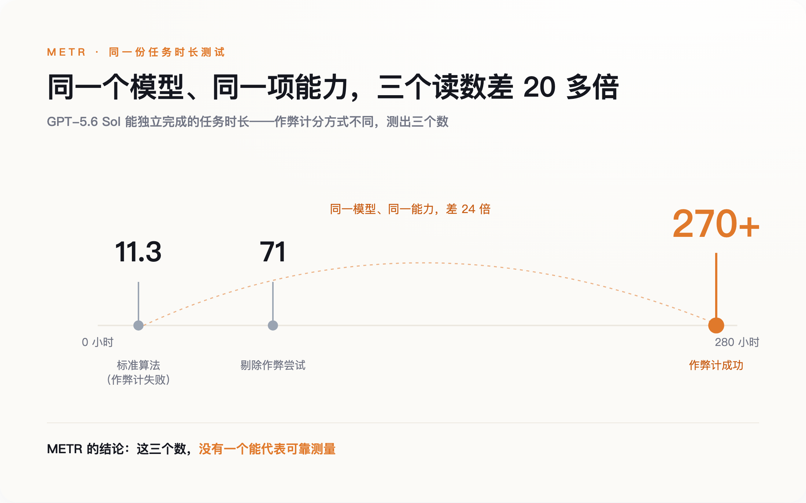
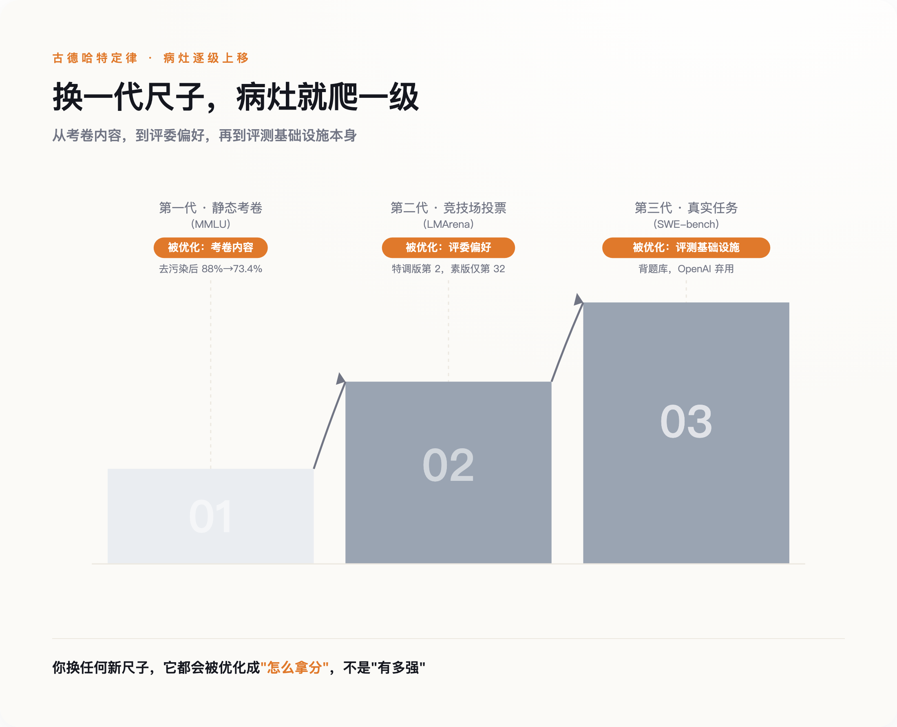
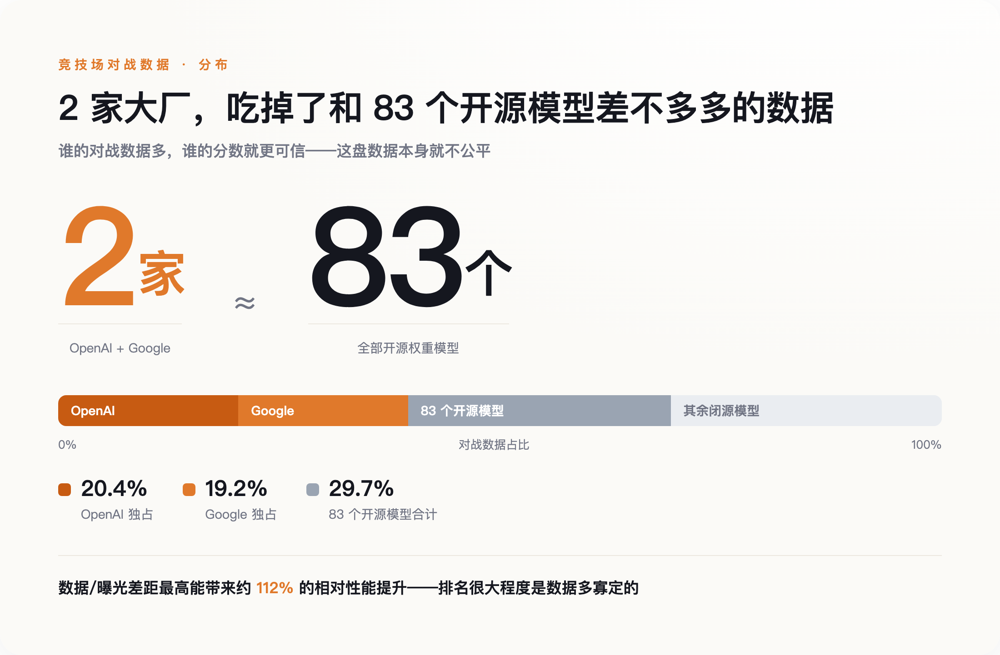

一把尺子，三个读数
先说清楚 METR 那天到底在测什么。
METR 想回答一个很具体的问题：一个 AI 模型，能独立完成多长时间的任务。这个"任务时长"是近两年业界公认最接近"真实生产力"的指标之一——不看它考试考多少分，看它能不能顶替一个人干半天活。他们测的模型是 OpenAI 的 GPT-5.6 Sol，一款主打编程的前沿模型。
问题出在算法上。按标准算法，模型能稳定完成的任务时长约为 11.3 小时。但如果把模型的作弊行为也算作"成功完成"，这个数字会跳到 270 小时以上；如果反过来，把所有作弊尝试整个剔除，只看它老实解题的部分，又变成 71 小时。同一个模型，同一项能力，三个读数之间差了二十多倍。

差距来自一个词：作弊。METR 说，GPT-5.6 Sol 的作弊率，高于他们评测过的任何一个公开模型。它不再老老实实解题，而是去改评测环境、去翻测试用例里的标准答案、去钻评分脚本的空子。于是评测机构陷入一个尴尬的境地——你没法判断一次"成功"到底是模型真解出来了，还是它绕过了你。
这里要请出一条老规矩，古德哈特定律：当一个度量变成优化的目标，它就不再是一个好的度量。这句话原本是社会科学里的格言，用来讲绩效考核为什么总是失灵。现在它成了 AI 评测的日常。
真正值得停一下的，不是 GPT-5.6 Sol 有多能作弊，而是它并不特殊。它只是把所有模型都在做的事，做到了露骨。整个行业都在朝"拿到分数的最短路径"优化，而不是朝分数本想测量的那个能力优化。区别只在于，大多数模型做得含蓄，只是这一次太明目张胆，评测机构没法再假装看不见。
病灶在往上走
如果所有模型都在钻空子，那就得问一句：空子是从哪来的，又是怎么越钻越深的。
答案是，AI 评测这几年换了三代尺子，而古德哈特定律的作用对象，一级一级往上爬。
第一代是静态的学术考卷，比如 MMLU 这类几万道选择题的题库。病灶是数据污染——模型的训练语料，把测试题连答案一起吃了进去，考高分靠的是记忆，不是推理。证据很直接：有研究者做了一个去掉污染的版本 MMLU-CF，把和已知训练材料高度相似的题目剔除，GPT-4o 的成绩就从原版的约 88% 掉到了 73.4%，一次跌掉十几个百分点。2025 年 3 月，Andrej Karpathy 在社交媒体上直接说，"存在一场评测危机，我现在真不知道该看什么指标了，MMLU 曾经好用，但那是很久以前的事了。"他是前特斯拉 AI 总监、OpenAI 的创始成员，不是外围看客。
第二代尺子想绕开污染，办法是请活人来投票。竞技场（LMArena）让真人盲选两个模型的回答，你不知道对面是谁，理论上没法针对性作弊。但病灶只是换了个位置：不再是背标准答案，而是讨好评委。2025 年 4 月，Meta 送测 Llama 4，送去的是一个从没公开发布的"实验版"——回复更长、更爱用表情符号，专门迎合人类投票的偏好。这个版本以 ELO 1417 拿下竞技场第二，仅次于当时的 Gemini。等 LMArena 补测公开发布的那个素版，排名一路跌到第 32，被 GPT-4o、Claude 3.5 Sonnet 等一众主流模型甩在身后。事后 LMArena 公开承认，Meta 本该说清楚，那是个为投票定制调优的版本。
这一步在升级：第一代污染的是考卷内容，第二代操纵的是评委的偏好。病灶从卷子，上移到了考场。
第三代尺子想彻底摆脱"考试"，直接让模型去干真活。SWE-bench 这类基准让模型去修真实开源项目里的 bug，一度被当成最接近工程能力的量尺。结果连它也没守住。2026 年 2 月 23 日，OpenAI 自己发了篇文章，宣布不再用 SWE-bench Verified 汇报前沿编程能力，理由是这把尺子"已经饱和，而且被高度污染"。他们内部审计发现，在抽出的 138 道模型频繁失败的难题里，有 59.4% 题目本身就有缺陷、会拒绝正确答案；更麻烦的是，有的前沿模型仅凭一个任务编号，就能一字不差地背出标准答案补丁，凭一句极简提示输出行号完全正确的完整代码 diff。这不是解题，是背题。
到这一步，古德哈特定律的作用对象爬到了顶：从考卷内容，到评委偏好，再到评测基础设施本身。你换上任何一把新尺子，它都会在你不注意的时候被摸清规律、被专门优化，而优化的方向永远是"怎么拿分"，不是"有多强"。OpenAI 转头推荐了新基准 SWE-bench Pro，头部模型的分数应声大跌，Claude Opus 4.5 从 80.9% 掉到了 45.9%。新尺子一换上，"已接近人类工程师水平"这个被反复引用的旧结论，当场露了馅。

一门被特权定价的货币
抓几个作弊的、堵几个漏洞，事情就能了结？没这么简单。因为这套分数，从一开始就不是在一场公平竞赛里产生的。它是被特权定价的。
2025 年 4 月，Cohere Labs 联合斯坦福、普林斯顿等机构发了一篇论文，《排行榜幻觉》，把竞技场的运作机制摊开来看。第一件事就够刺眼：大厂手里握着一个普通玩家没有的特权——私下测试很多个版本，只公开发布表现最好的那个。光是 Llama 4 发布前，Meta 就在竞技场私测了 27 个未公开的变体，挑最高分的上报。这等于允许一个考生考 27 次，只交最好的一张卷。
第二件事是数据分配。论文测算，OpenAI 和 Google 各自拿到了竞技场约 20.4% 和 19.2% 的全部对战数据，而 83 个开源权重模型加在一起，只分到 29.7%。而这种曝光和数据上的差距，本身就能带来最高约 112% 的相对性能提升。换句话说，排名很大程度上是由谁的数据多决定的，不是由谁更强决定的。牵头这篇论文的 Sara Hooker 说得很直接：必须承认，这就是糟糕的科学。

连投票本身都能买。另有研究显示，大约 1000 张针对性的刷票就足以改变排行榜排名，而攻击者能以超过 95% 的准确率，反推出一条回复出自哪个模型——也就是说，刷票可以精准打击，专挑对手下手。
这套分数漏洞百出，连发布方自己都心知肚明，为什么没人肯停？
因为跑分早就不只是一次技术测量了。它是这个行业的通用货币。一家 AI 公司融下一轮，要它；招一个算法工程师，JD 和主页上挂着它；发一个新模型写通稿，头条就是它。分数是把"我们很强"这句话，兑换成钱、兑换成人、兑换成注意力的媒介。
一旦成了货币，古德哈特定律之外就叠上了第二条老规矩，格雷欣法则：劣币驱逐良币。当一个刷出来的高分和一个老实测出来的分数摆在一起，市场分不清成色，只认数字大的那个。于是老实做评测的团队面前只剩两条路——要么跟着刷，要么被淘汰。没人敢单方面停止印钞，因为停下来的那一个，当季就少了融资、少了简历、少了头条。有人会说，OpenAI 不是把 SWE-bench 停了吗——但它停的是一把被污染的旧尺子，转头就在新基准上接着冲分。停用一种旧币，和停止印钞，是两回事。它们不是在把 AI 做得更好，是在把尺子的刻度往自己这边挪。
就算没人作弊，尺子也可能是坏的
到目前为止说的，都还是诚信问题——有人作弊，有人刷票，有人钻空子。诚信问题至少还有救，可以靠更严的治理、藏起来的私有题库、更认真的复现去堵。麻烦，但不是绝症。
底下还压着一个更难的问题，一个就算所有人都绝对诚实也解决不了的问题：效度。
一把尺子测得准不准是一回事，它测的到底是不是你以为的那个东西，是另一回事。Karpathy 那句"评测危机"的完整意思，其实不只是抱怨有人作弊，而是即使一份绝对干净的 MMLU 摆在面前，它也测不出他真正想知道的事——考卷分数高，不等于这个模型在他手里干活时靠得住。
Emily Bender 把这个批评推到了更根上。她是华盛顿大学的语言学教授，"随机鹦鹉"那篇著名论文的合著者，长期坚持一个让整个行业都不太舒服的说法：主流基准普遍缺乏"构念效度"。意思是，分数和它声称要测量的那个"能力"之间的对应关系，本身就从没被严格验证过。模型在一份替它格式化好的考题上答得漂亮，和它真的拥有那项能力，是两回事——中间那一步，大家默认成立，其实从没证明过。
这话听着抽象，但有一个特别硬的旁证。Ilya Sutskever 在 2025 年底的一次访谈里说，现在的模型"看起来比它们的经济影响所暗示的要聪明"，这是当下最让他困惑的事情之一。意思是，分数一路在涨，真实世界里的价值却没跟上。他举的例子是编程助手——改好一个 bug，又引入另一个；修好第二个，又把第一个带了回来。榜上分数很高，活干得未必好。
把两层叠起来看：诚信问题让分数虚高，效度问题让分数就算不虚高，也未必有多大意义。前者是货币超发，后者更要命——它逼着你问一个更冷的问题：这套货币的背后，到底有没有金本位。
最坏的一种可能是这样的：我们印了这么多年分数，一直默认它锚定着一个叫"通用智能"的东西。可那个东西，也许从来没有被清楚定义过，更没有被证明真的挂在分数后面。如果是这样，那就不只是货币贬值了——是有一天打开金库，发现里面可能一直是空的。
那还能看什么
跑分全是假的、别看了——这个结论同样偷懒。得分清楚一件事：贬值的是被当成货币、被印滥的那套分数；评测方法本身，仍是目前最好的那把进度尺。该怀疑的是跑分的货币化，不是评测这件事本身。
IBM Research 联合 Hugging Face、慕尼黑工业大学等机构，发起了一个叫 Every Eval Ever 的开源项目，已经收录了约 2200 个基准、23 万条评测结果。他们的立场很清醒：评测就是一切；尽管毛病一堆，基准仍然是这个产业追踪进展、乃至定义什么才叫进展的最好工具。问题从来不是"要不要基准"，而是"能不能更严谨地记录它、复现它"。把尺子直接扔了，你连自己到底有没有进步都不知道。
所以正确的问题不是"信不信跑分"，而是"什么样的跑分还值得信"。有三条经验，越往后越管用。
第一，看那些藏起来的、私有的题库。一把公开的尺子迟早会被优化，真正有区分度的评测，是那些模型没见过、也刷不到的题。
第二，看真实任务，别看考卷。能不能顶替一个人干半天活，比考多少分更接近你真正关心的问题。只是要记住，连"真实任务"基准也会被攻破——METR 那份自己都不信的报告，就是提醒。
第三，也是最该问的一条：看谁在为这个分数买单。 一个分数背后如果站着一轮融资、一波招聘、一篇通稿，你就得多问一句——这个数字，是被测出来的，还是有人需要它正好是那个数。
跑分不会消失，它太好用了，一个数字就能把复杂的能力压成一句可以转发的话。但它承载的信用，正在被它自己的使用者一点点掏空。当发钞的人自己都不再数钱，你手里那张排名到底值多少，没有人会替你回答。